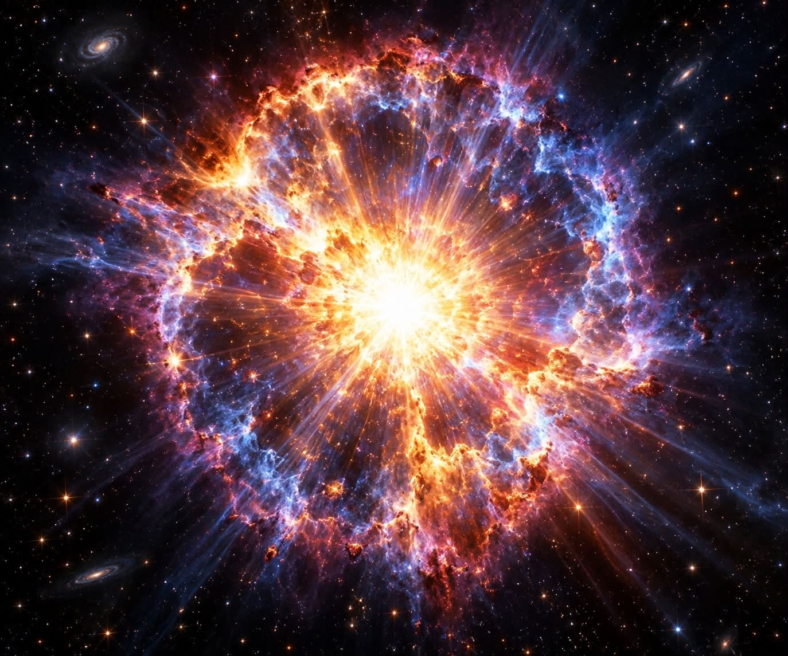

Съдържание на електронното ръководство:
Този сайт съдържа тестове, допълнителна информация, обобщителни таблици, интересни факти и анекдоти, свързани с физиката и с живота на известни физици. Физиката е наука със сложен характер, тъй като освен добро логическо мислене изисква и добро познаване на математическите формули. Без развитието на тази сложна наука обаче техническият прогрес не би бил възможен. Сайтът обхваща всички раздели, които се изучават в VII клас. Предложени са тестове по всяка тема, контролни тестове за всеки раздел, както и тестове за входно и изходно равнище.
 |
 |
 |
 |
 |
 |
 |
 |
Забележка: Предложените тестове включват задачи за решаване. Поради тази причина след всеки тест са дадени указания, които могат да ви помогнат да анализирате задачите или да ви насочат към начина на тяхното решаване. Освен упътванията са предоставени и ключове с верните отговори.
Към обобщителните тестове са посочени точките за всяка задача, както и скала за оценяване. В края на учебната година се провежда национално външно оценяване, а в по-горните класове – държавни зрелостни изпити (матури). Затова е полезно учениците да се запознаят с различни видове тестове, задачи и начина на тяхното оценяване.
При решаването на задачи по физика е важно да се знае, че точки се присъждат не само за напълно вярно решена задача, но и за правилно изпълнените отделни етапи от решението.
📖 Речник - "Начален преговор"
⚡ Речник - "Електричество и магнетизъм"
🔊 Речник - "Светлина и звук"
...........🌌 Речник - "От атома до Космоса"...........
За въпроси: sasha_sd@abv.bg
автори: Сашка Дойкова и инж. Цветелина Дойкова